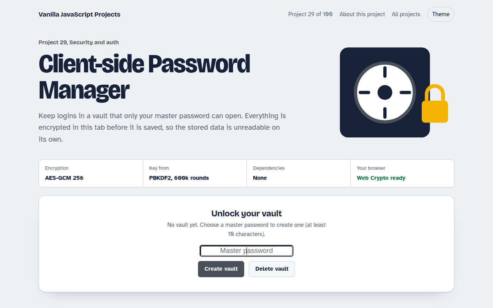

Home / Security and Auth / Client-side Password Manager
Client-side Password Manager in JavaScript, Free with Live Demo
Free password manager in plain JavaScript. An encrypted vault with AES-GCM and PBKDF2, a password generator, strength meter, auto lock and encrypted export.

Runs on: AES-GCM 256. Every modern browser. This is a learning project: for real passwords use an audited password manager.
What is the Client-side Password Manager?
This is a small password vault that lives in your browser. Everything is encrypted before it is saved, so the stored data is useless without your master password. It also makes strong passwords and locks itself after two minutes.
Your master password is stretched with PBKDF2 600,000 times to make a key, and the vault is encrypted with AES-GCM. A wrong password fails the built in integrity check, so nothing is ever shown by mistake.
Good for
- Learning real browser encryption
- Storing secrets in a local tool
- Understanding how password managers work
- Security coursework
What this project does
- Vault encrypted with AES-GCM, key derived with PBKDF2 SHA-256
- Password generator with length and character options
- Strength meter with an estimated crack time
- Auto lock after 2 minutes of no activity
- Search, copy, and export the encrypted vault
How it works
- Stretch the passwordYour master password and a random salt go through PBKDF2 600,000 times to make a 256-bit key.
- Encrypt the vaultThe whole list is turned into JSON and encrypted with AES-GCM and a fresh random IV on every save.
- UnlockOnly the salt, IV and ciphertext are stored. A wrong password fails the AES-GCM integrity check, so nothing is shown.
The key JavaScript
This is the heart of the project. The full file has the rest, including the screen layout and error handling.
const salt = crypto.getRandomValues(new Uint8Array(16));
const base = await crypto.subtle.importKey("raw", new TextEncoder().encode(master), "PBKDF2", false, ["deriveKey"]);
const key = await crypto.subtle.deriveKey(
{ name: "PBKDF2", salt, iterations: 600_000, hash: "SHA-256" },
base, { name: "AES-GCM", length: 256 }, false, ["encrypt", "decrypt"]);
const iv = crypto.getRandomValues(new Uint8Array(12)); // new IV every save
const data = await crypto.subtle.encrypt({ name: "AES-GCM", iv }, key,
new TextEncoder().encode(JSON.stringify(vault)));
// Store salt + iv + data. A wrong password makes decrypt() throw.How to use it
- Click Download HTML file above.
- Open the file in a code editor, like VS Code.
- Run it from a local server with
npx serve .so the camera, microphone and AI features are allowed. - Change the text and colors, then upload it to GitHub Pages, Netlify or your own site. It is one file with no build step.
Questions people ask
Is it safe to use for my real passwords?
It is a learning project. The encryption is strong, but use an audited password manager for real accounts.
Why 600,000 PBKDF2 rounds?
It makes each guess slow. That is the current OWASP advice for PBKDF2 with SHA-256, and it takes under a second on a normal laptop.
What happens if I forget the master password?
The vault cannot be opened. There is no reset, because nobody else holds a copy of the key.